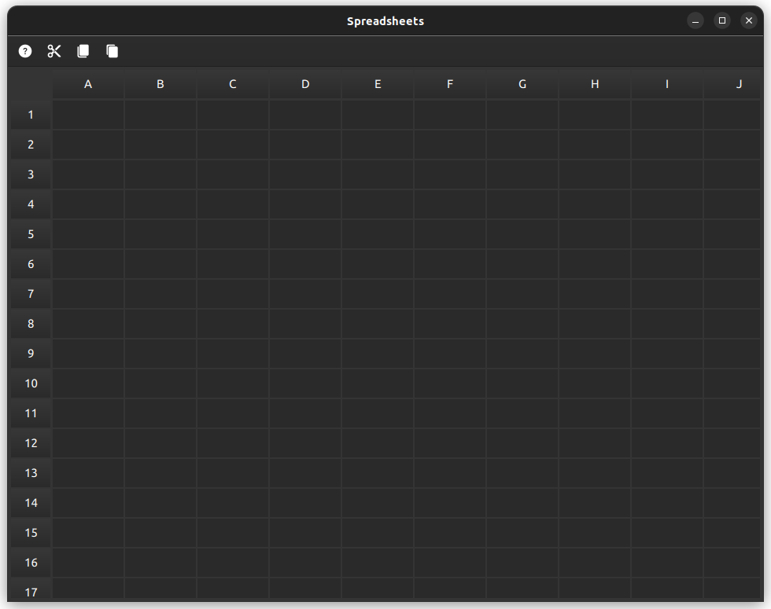

Spreadsheets Example
Demonstrates how to create a spreadsheet application.

The example demonstrates how to combine TableView and HeaderView to create a spreadsheet application.
Overview
The spreadsheets example demonstrates how to combine TableView and HeaderView to create a spreadsheet application. It serves as an excellent starting point for developers looking to understand the implementation of spreadsheet-like functionality in their applications, highlighting the versatility of TableView and HeaderView while providing practical insights into handling user interactions and data operations in a grid-based interface.
This example implements a comprehensive set of functionalities, providing users with a robust set of tools for data manipulation and structural organization. These functionalities include:
- Cell Manipulation
- Data Management
- Formula Support
Cell Manipulation
This feature set focuses on how users can interact with and modify the structure of the spreadsheet. Key capabilities in this area include:
- Select individual cells, entire rows, or columns
- Insert and remove rows and columns
- Show or hide specific rows and columns
Data Management
These features demonstrate advanced data handling capabilities, allowing users to efficiently manipulate cell contents. The following operations are supported:
- Copy, cut, and paste groups of cells
- Drag and drop cell contents
- Reorder rows and columns
Formula Support
This section highlights the spreadsheet's ability to perform calculations, enabling users to create dynamic, interconnected data. The supported operations include:
- Perform basic arithmetic operations
- Calculate sum of a range of cells
Perform basic arithmetic operations
This subsection covers the fundamental mathematical operations that can be performed within cells. Users can leverage the following capabilities:
- Single cell assignment
- Addition and subtraction
- Multiplication and division
Calculate sum of a range of cells
The summation feature allows users to quickly total a series of values. Users can employ a formula syntax similar to common spreadsheet applications. For example, to sum the values in cells A1 through B4, one might use a formula like "=SUM A1:B4"